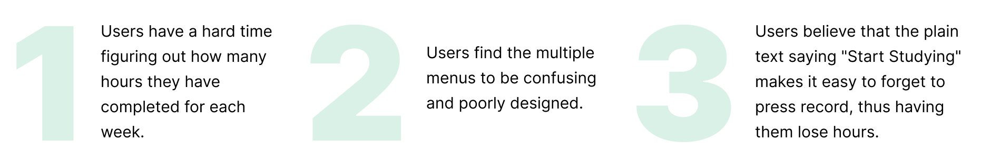

TIMELINE
2 Weeks
TEAM
Individual Project
MY ROLE
UI/UX Design
TOOLS
Figma
BACKGROUND
Greek Study is a mobile application used by college Greek-letter organizations to keep track of how many study hours each member has completed weekly. Users must be at designated areas on campus in order for their hours to be taken accounted for.
OBJECTIVE
Redesign the interface of Greek Study to improve the overall user experience of the current app.
THE CURRENT DESIGN
The screenshots below show how the application currently looks like.
USER RESEARCH
I wanted to get more insight on other people's experiences using the app. In addition to reading over Greek Study's ratings and reviews in the app store, I reached out to 5 frequent and 5 first-time users to see what issues they encountered upon using the application.
These were the key pain points that I found:
USER PERSONA
After gathering information from user research, I summarized my key findings into a target user persona.

IDEATION
From the feedback obtained through user research, I categorized possible solutions to tackle each problem:
Condense the study hours list
- Add total hour count feature for each week
Although there is a banner on the top of the home page that shows the user's study hours
for the week, this is the only place on the entire app that the user is given this information.
It also only displays the hours for the current week. When looking at the Study Hours page,
it's just a long list of each individual study session recorded. There isn't a section or
option that shows the user how many hours they have completed for each specific week. To make
the study hours list less clustered and fix pain point 1, dividing each week
into its own section will make it more convienent for the user to find exactly how many hours
they have completed each week.
Reconstruct the home page
- Combine multiple menus into one
On the current design of the app, there are two "menus." One is located at the top left
corner of the screen. Additionally there is a taskbar with more features on the bottom
of the screen. To add organization and cover pain point 2, moving all
features under one menu would get rid of any confusion for the user. They can easily find
what they are looking for in one place.
- Add logout button
Instead of having logout being an option from the menu, adding a logout icon on the
far right corner will allow faster and easier access for the user.
- Have an actual start button
To resolve pain point 3, converting the "Start Studying" text to an
actual button will be a visual reminder to the user to press on it to begin recording their
time studying. The button will be green to attract their attention, and will turn red as the
timer begins. The red will indicate that once the user is finished with their work, they will
rememeber to press on it again to end and record their hours.
Other improvements
- Add app name to login page
Since this is the first screen that users will see when they first open the app, the
name should be displayed to let them know what it is.
- Sort locations list in alphabetical order
All of the locations are just listed randomly and not in any specific order. Sorting
the names will make them easier for the user to find what they are looking for.
- Add search feature to locations list
If the user wanted to go to a specific location but wasn't sure if it would count
towards their study hours, adding a search for the locations list can them figure that out
quickly.
WIREFRAMES
The new design for the user interface was based on possible solutions previously curated during ideation.
USABILITY TESTING AND IMPROVEMENTS
I reached out to the same users that I had done interviews with to ask them for their feedback on my new UI designs as they were given the task to login, find a valid study location, begin timing their study session, and check their study hours. Overall the responses were positive, but there were minor changes that came up.
1. The icons for the menu felt too big for the screen
To fix this, I decided to reduce their size and also remove the labeling underneath since
I will be using common icons that are easily recognizable.
2. Study list is too long to scroll through
Instead of displaying the user's study hours as one continuous list, I added
a dropdown for each week. This way, the user can easily find a specific week they're looking
for and find how many hours they've completed during that time.
THE RESULT
Login
The awkward and uneven spacing was a major flaw in the original design of the login page.
I added the name of the app, which was initially missing, and moved the logo and login
information down towards the center to focus the user's attention and make the page more
appealing.
Menu
Rather than having the map be a satellite view, I changed it to a basic standard map with
names being displayed at each location to make them easier to find. In addition to having a
singular menu, the current location and study time are grouped together at the bottom of the
screen above the start button. Users can choose to have this displayed on the screen, or they
can swipe it down to clear space.
Study Hours List
The study hours are now organized by week. Users can easily find a specific week they
are looking for and click on the dropdown to see how many hours were completed. The
original way that hours were accounted for also didn't make much sense. It's hard to
calculate how much "1.7 hours" meant, so I changed them to display as "hours:minutes."
Locations List
The original locations list had no organization or order to it. The names were just
listed randomly, so I changed it to sort the locations alphabetically to make it easier for
the user to find a specific place. I also added in a search function to help the user look
up certain places to see if they count as designated study areas to ensure that their study
hours will count.
Timer
Making the timer bright red will acknowledge the user that time has started and remind
them to end their study session once they are done. They will simply press on the button to
record their hours, which will then turn back to green.
KEY TAKEAWAYS
Working on this redesign project had taught me the importance of listening to the needs of the user and understanding their concerns before beginning the design process. I made sure to keep their insights in mind as I was making decisions on what needed to change in order to enhance the user experience. Since this was an existing app, it was a good challenge for me to improve my visual eye for design as I had to find ways to upgrade the interface while maintaining the brand's prominent green color.
The next steps for this project would be to gather more feedback as I continue iterations to grow my design skills and constantly improve the overall experience for current and future users.